Europe
stand at the bar, drink it fast, argue about the milk.no stalls like that here. try another market?
- chocolate a la taza
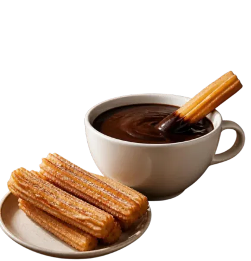
Chocolate a la taza
- caffè

Espresso
- Glühwein
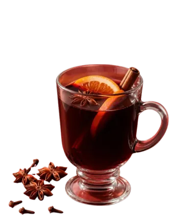
Glühwein
- φραπέ
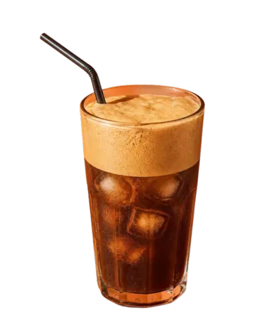
Greek frappé
- caife Gaelach
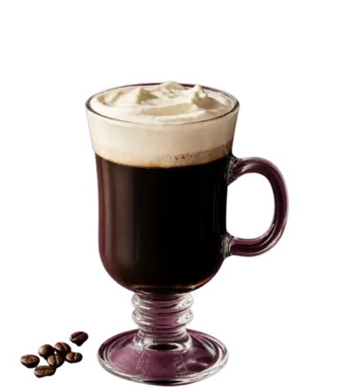
Irish coffee
- квас
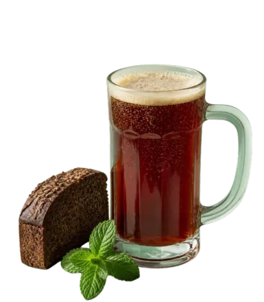
Kvass
- elderflower cordial
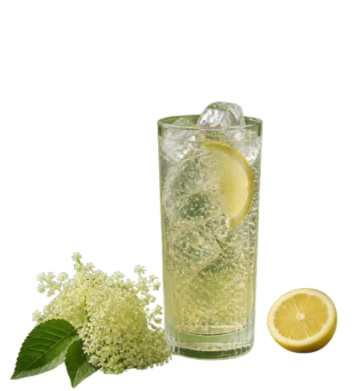
Elderflower cordial
- τσάι του βουνού
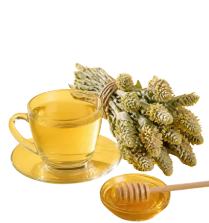
Greek mountain tea
- julmust
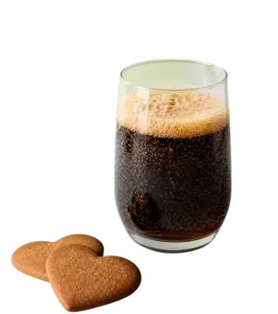
Julmust
- кефир
Kefir
- компот
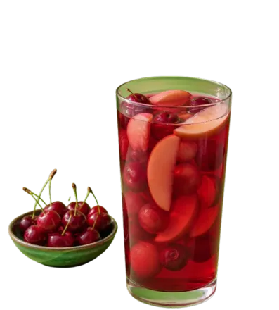
Kompot
- sangría
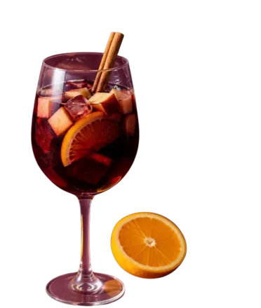
Sangria
- Wiener Melange
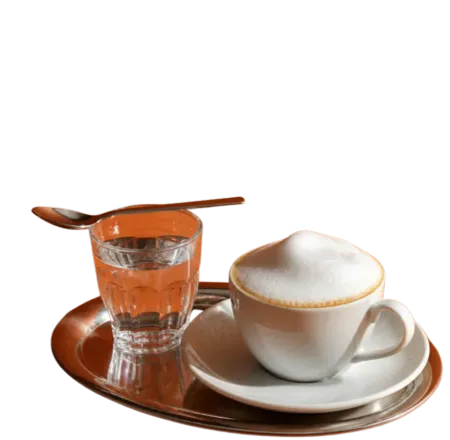
Wiener Melange

Chocolate a la taza
chocolate a la tazaHot chocolate so thick a churro almost stands up in it. In Spain it’s a classic breakfast, with churros on the side for dipping.
What’s in it- Whole milk · from your fridge
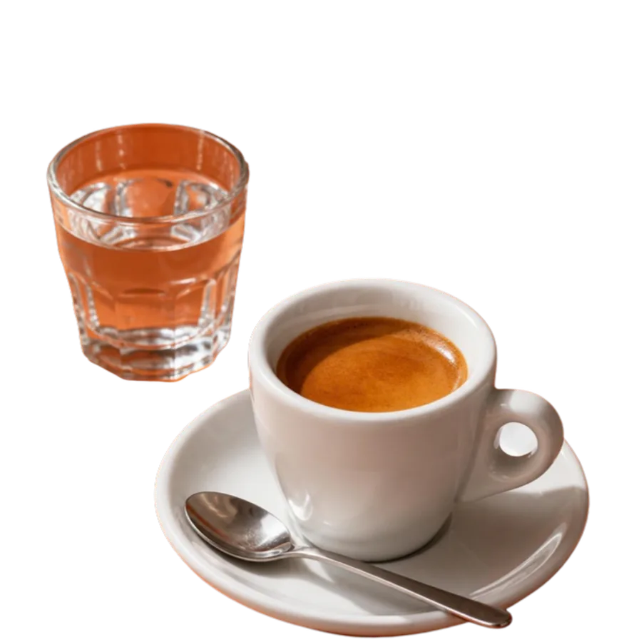
Espresso
caffèA short, strong shot pulled under pressure and made to order, one cup at a time. The word comes from English “express”, as in made expressly for you.
What’s in it- Raw sugar · from the bar counter
- A glass of water · from your tap
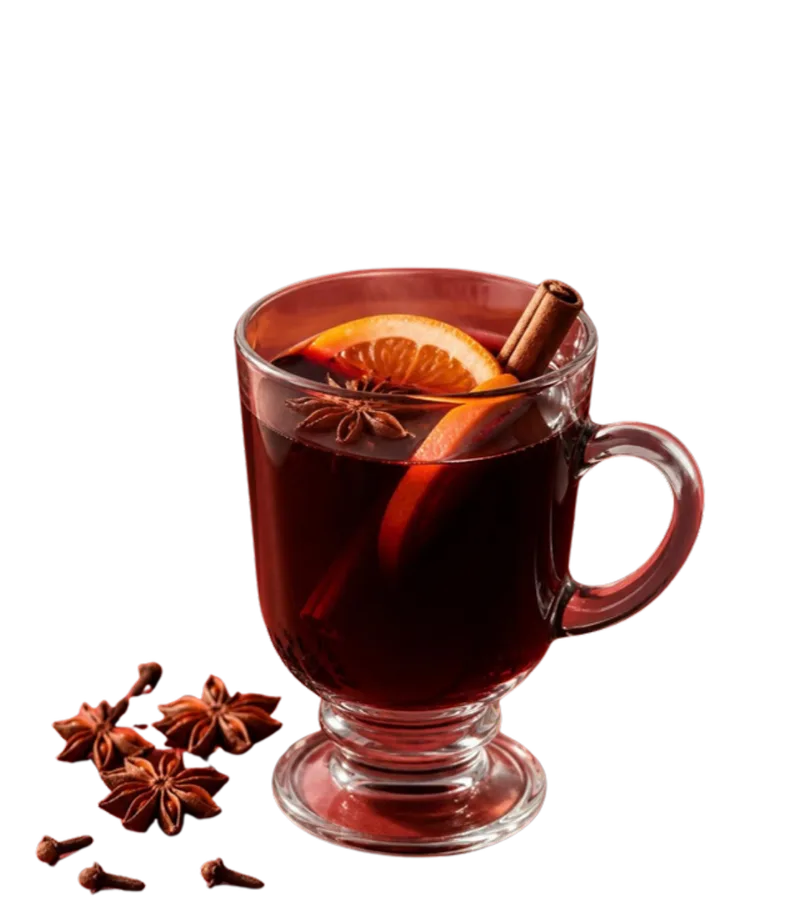
Glühwein
GlühweinRed wine warmed with orange, cinnamon, cloves and star anise, sold in mugs at the Christmas markets.
What’s in it- Sugar · from your cupboard
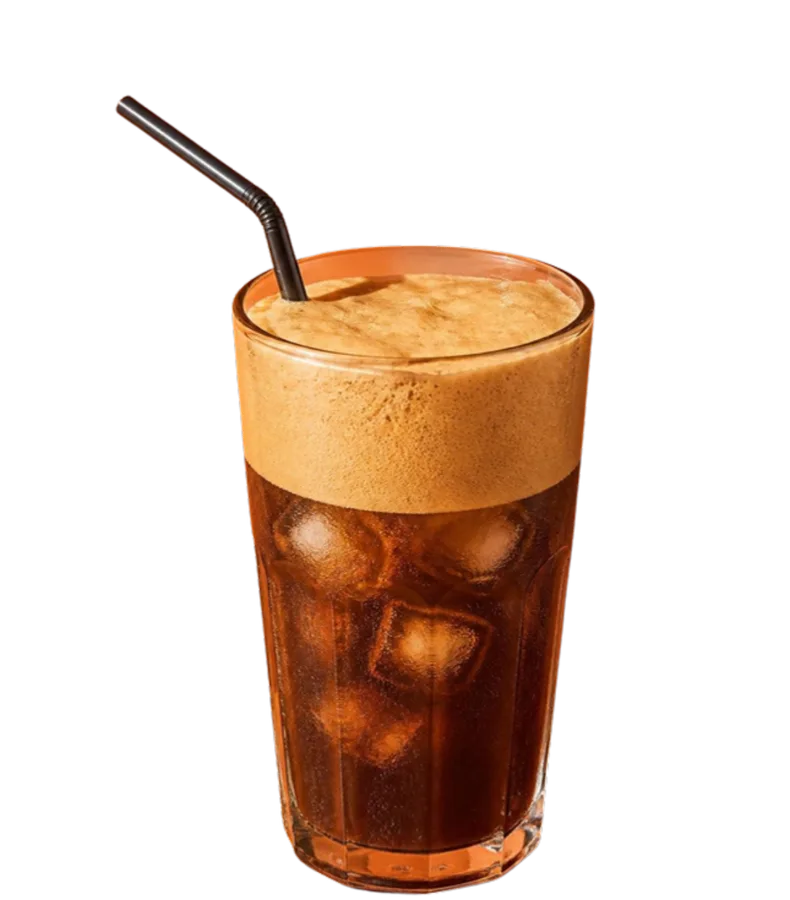
Greek frappé
φραπέInstant coffee shaken with a little water into a thick foam, then topped with ice and water. The famous story says it was born by accident at a Thessaloniki trade fair in 1957.
What’s in it- Sugar · from your cupboard
- Ice cubes · from your freezer
- Milk · from your fridge
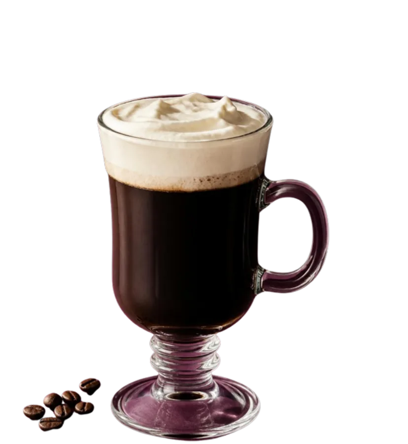
Irish coffee
caife GaelachHot coffee, Irish whiskey and brown sugar, with a layer of lightly whipped cream floated on top. You drink the coffee through the cream.
What’s in it- Heavy cream · from your fridge
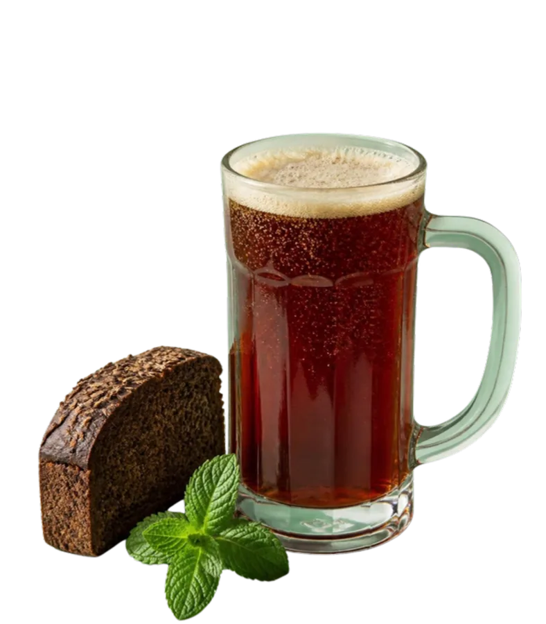
Kvass
квасDark rye bread fermented with water, sugar and a little yeast into a lightly fizzy, slightly sour drink. Once sold from yellow street barrels all summer.
What’s in it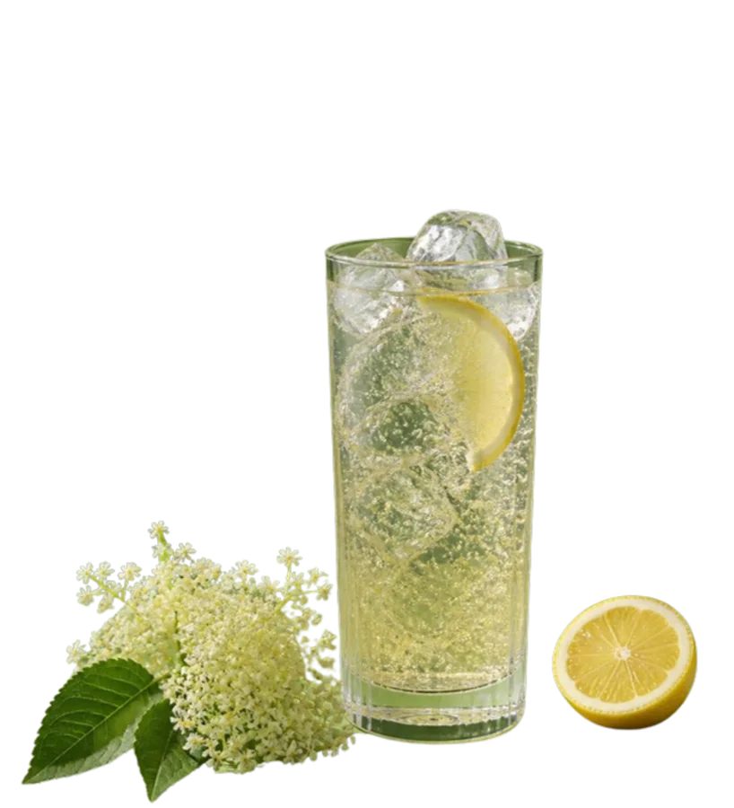
Elderflower cordial
elderflower cordialA sweet, floral syrup steeped from the flowers of the elder tree, with lemon and orange. Stir a splash into cold water and it tastes like June.
What’s in it- Elderflower heads · from the hedgerow, in late spring
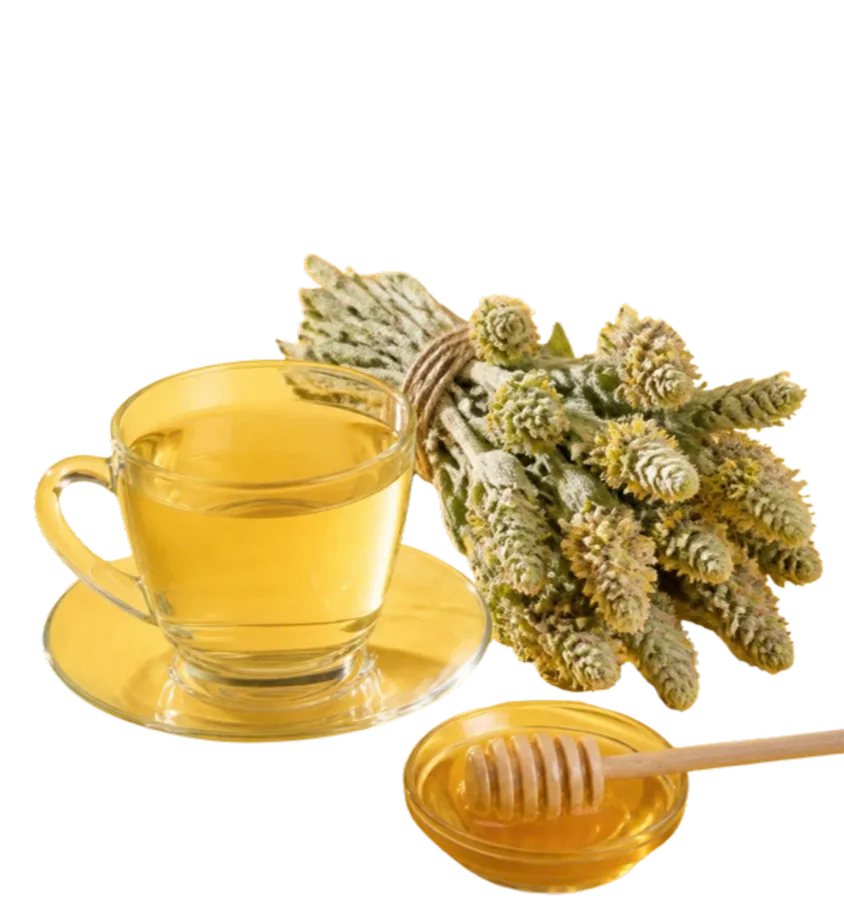
Greek mountain tea
τσάι του βουνούThe dried stems, leaves and flowers of Sideritis, a mountain herb, boiled in a pot and poured with honey and lemon. Not from the tea plant, despite the name.
What’s in it- Water · from the tap
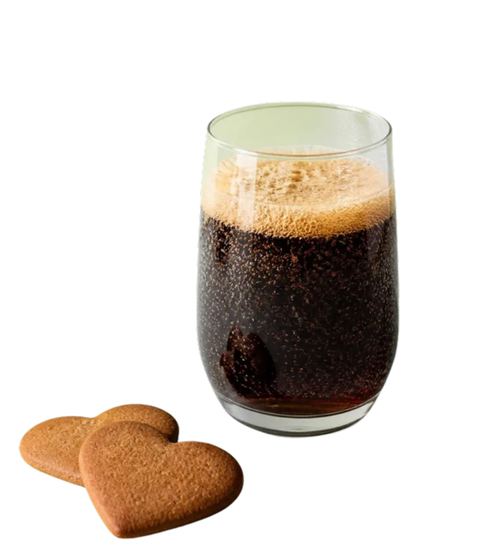
Julmust
julmustSweden’s Christmas soft drink: dark, sweet and fizzy, made from hops, malt and a secret mix of spices. It began as an alcohol-free stand-in for dark beer.
What’s in it- Ice · from your freezer
Kefir
кефирMilk fermented by kefir grains into a tart, creamy drink that’s sometimes slightly fizzy.
What’s in it- Milk · from your fridge
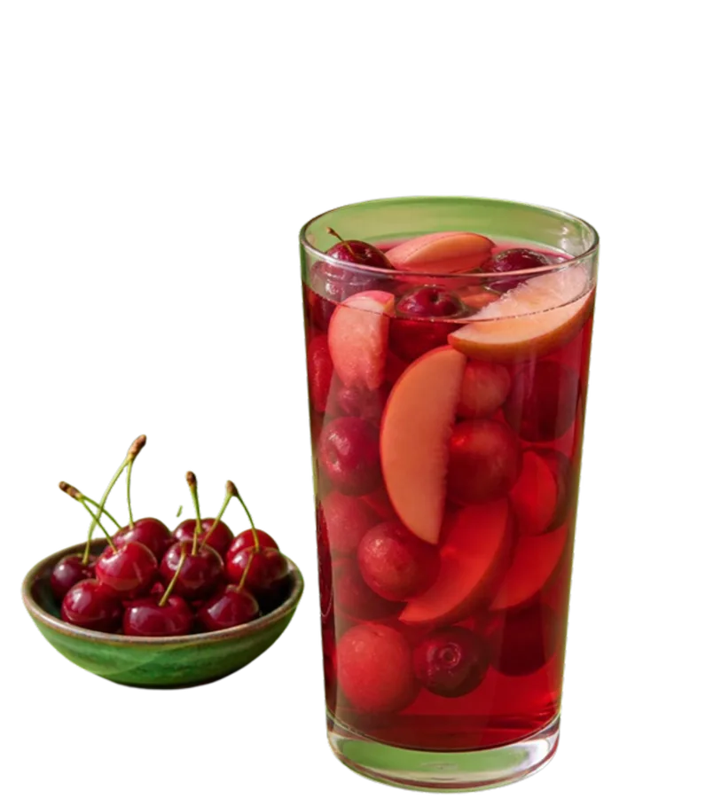
Kompot
компотFruit boiled in water until the water tastes like the fruit. Poland and Russia say kompot; in Ukraine, the dried-fruit version is uzvar.
What’s in it- Sugar · from your cupboard
- Water · from the tap
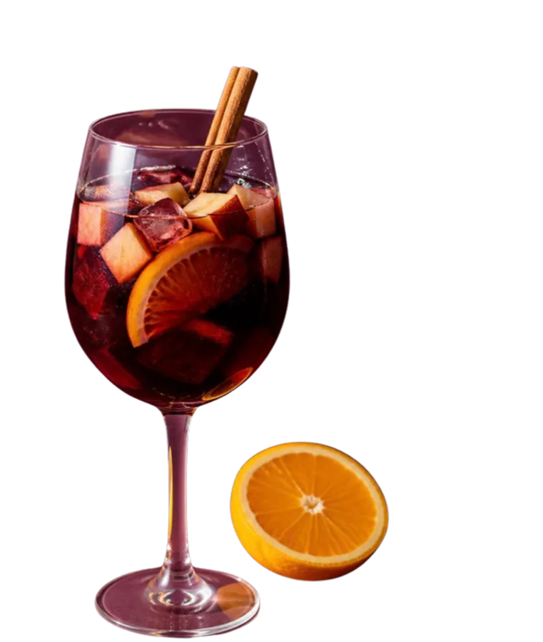
Sangria
sangríaWine, chopped fruit and a little sugar, often with brandy, served chilled from a pitcher. Under EU rules, only Spain and Portugal can put “sangría” on the label.
What’s in it- Sugar · from your cupboard
Wiener Melange
Wiener MelangeVienna’s milk coffee: strong coffee and hot milk in about equal parts, with a cap of milk foam, served with a glass of water.
What’s in it- Milk · from your fridge
- A glass of water · from the tap